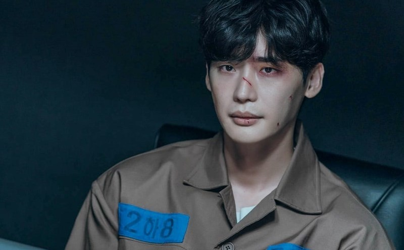

RVM

Profile
Thuộc thể loại trinh thám, chính kịch, tâm lý tội phạm, phim truyền hình 16 tập kể về Park Chang Ho (Lee Jong Suk) - luật sư hạng ba chỉ đạt tỷ lệ thắng kiện 10%. Anh được mệnh danh "Big Mouth" bởi tài "bốc phét", năng lực kém cỏi và ít khi làm được việc. Sự kiện thay đổi cuộc đời và gia đình Chang Ho là khi thị trưởng Choi Do Ha (Kim Jo Hun) thuê anh làm luật sư cho một vụ án giết người. Trong quá trình điều tra, Chang Ho phát hiện những sự thật về tầng lớp thượng lưu trong thành phố. Vài ngày sau, Chang Ho bị chuốc thuốc và gặp tai nạn giao thông.
Khi tỉnh dậy, anh bị bắt vì tội sử dụng ma túy. Không lâu sau, cảnh sát công bố Chang Ho chính là Big Mouse - tên tội phạm nguy hiểm đứng đầu thế giới ngầm - bởi những tài sản phi pháp được tìm thấy tại văn phòng luật sư của anh. Từ Big Mouth, giờ đây anh phải sống với thân phận Big Mouse. Dù bị kết tội sai, danh tính giả mạo lại là cách duy nhất bảo vệ Chang Ho khỏi những kẻ muốn hãm hại. Chang Ho nhận được sự kính nể của nhiều người trong tù, trong đó Jerry (Kwak Dong Yeon) và Noh Park (Yang Hyung Wook) là những đàn em thân cận nhất.
Khi sử dụng thân phận giả, Chang Ho dần trưởng thành và mạnh mẽ hơn. Từ đó, anh bước vào cuộc chiến tìm ra danh tính thật của Big Mouse và minh oan cho bản thân, khám phá những kế hoạch đen tối của tầng lớp thượng lưu để tồn tại và bảo vệ gia đình mình. Đồng hành với anh trên chặng đường ấy là vợ - Go Mi Ho (Yoona), bố vợ - Ko Gi Kwang (Lee Ki Young), anh bạn thân luật sư - Kim Soon Tae (Oh Eui Shik). Họ quyết tâm sử dụng sức mạnh của công lý và luật pháp để trừng trị tội ác của những kẻ có quyền lực.
Kịch bản được đánh giá cao bởi những tình tiết căng thẳng và khó đoán. Qua mỗi tập phim, biên kịch dẫn dắt người xem đi từ bất ngờ này tới bất ngờ khác. Mỗi khi khán giả nghĩ rằng họ hiểu chuyện gì đang diễn ra, câu chuyện ngay lập tức rẽ sang chiều hướng mới. Không ai có thể đoán được tình tiết của những tập sau. Danh tính Big Mouse cũng như động cơ của các nhân vật chỉ được dần hé lộ vào nửa cuối phim. Với những người yêu thích suy luận, tác phẩm là một trải nghiệm điện ảnh thú vị.
Kịch bản được đánh giá cao bởi những tình tiết căng thẳng và khó đoán. Qua mỗi tập phim, biên kịch dẫn dắt người xem đi từ bất ngờ này tới bất ngờ khác. Mỗi khi khán giả nghĩ rằng họ hiểu chuyện gì đang diễn ra, câu chuyện ngay lập tức rẽ sang chiều hướng mới. Không ai có thể đoán được tình tiết của những tập sau. Danh tính Big Mouse cũng như động cơ của các nhân vật chỉ được dần hé lộ vào nửa cuối phim. Với những người yêu thích suy luận, tác phẩm là một trải nghiệm điện ảnh thú vị.
Mặc dù vậy, phim không còn giữ được sự kịch tích từ khi Big Mouse thật lộ diện. Kịch bản bắt đầu trở nên lan man, nhiều chi tiết thiếu logic khiến mạch phim kém hấp dẫn so với những tập đầu.
Sau khi tập cuối cùng phát sóng, phim nhận nhiều lời chê. Trên các hội nhóm và diễn đàn, nhiều khán giả bày tỏ thất vọng bởi kết thúc của bộ phim quá chóng vánh với cách xử lý nút thắt hời hợt. Mọi mâu thuẫn chỉ được giải quyết trong sáu phút cuối cùng. Ngoài ra, nhiều tình tiết nhà làm phim đặt ra không có lời giải đáp.
Diễn xuất của các diễn viên là một trong những điểm mạnh của tác phẩm. Lee Jong Suk đánh dấu sự trở lại sau khi xuất ngũ bằng vai diễn gai góc, đòi hỏi lối diễn đa dạng, giàu cảm xúc. Màn trình diễn chứng minh anh vẫn là một diễn viên có thực lực. Những biểu cảm và thần thái từ sợ hãi, đau buồn đến quyền lực, lạnh lùng của nhân vật Chang Ho đều được thể hiện qua nét mặt và ánh mắt của anh.

Màn hóa thân của Yoona (vai Go Mi Ho) nhận được nhiều lời khen từ khán giả bởi sự tiến bộ của cô. Yoona là ca sĩ của nhóm nhạc SNSD, sau đó lấn sân phim ảnh. Cô luôn bị đưa vào danh sách những "bình hoa di động" của Hàn Quốc vì lối diễn cứng nhắc, gượng gạo. Tuy nhiên, ở phim này, khả năng diễn xuất của Yoona đã cải thiện. Cô vào vai y tá Go Mi Ho - vợ của Chang Ho, góp phần lớn trên hành trình tìm lại công lý cho chồng. Yoona thể hiện thành công hình ảnh một người thông minh, gan dạ, luôn tin tưởng, yêu thương và sẵn sàng hy sinh vì chồng.
Các nhân vật thị trưởng Choi Do Ha, chủ tịch Nhật báo Woojeong Daily - Gong Ji Hoon (Yang Kyung Won) và quản giáo Park Yoon Gap (Jung Jae Sung) đều mang những nét tính cách ấn tượng. Trên các diễn đàn phim, khán giả thích thú với thần thái, biểu cảm của từng diễn viên. Ở nhiều phân đoạn, họ còn đánh giá ba nam diễn viên có màn thể hiện nổi bật hơn Lee Jong Suk. Trong đó, nhân vật Gong Ji Hoon dành được nhiều tình cảm từ khán giả nhờ lối diễn xuất tự nhiên, chân thật của Yang Kyung Won. Các diễn viên khác trong phim đều diễn tròn vai.